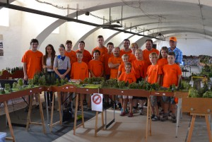
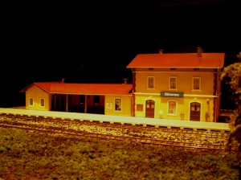
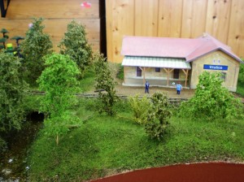
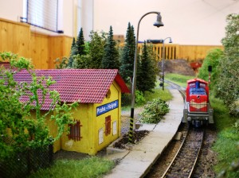

O nás
Vítejte na stránkách modelářského kroužku modulové železnice MKMŽ Slivenec.
Naším cílem je přiblížit svět železnice dětem i dospělým prostřednictvím modelářství.
Scházíme se pravidelně každý druhý týden, kde společně vyrábíme moduly.
Přijďte se k nám podívat a stát se součástí našeho týmu!

Kroužek je pro děti od třetí třídy.
Horní hranice je neomezená. Vítáni jsou i dospělí.
Naučíte se zde pracovat s různými materiály
(dřevo, polystyren, sádra, barvy, lepidla, drátky, posypy, foliáž apod.)

Každý pracuje na svém kusu modulu (48 x 86 cm) na dané téma,
který může spojit s ostatními moduly a tím vytvořit libovolně prostorové kolejiště.

Modelujeme měřítku 1:87 (velikost H0).
V současné době je tato modelová velikost nejvíce rozšířena
a vyrábí ji většina světových výrobců.
